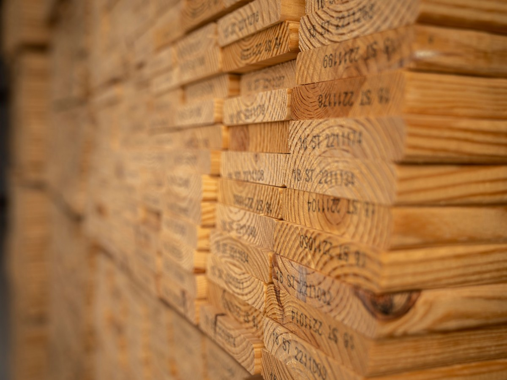
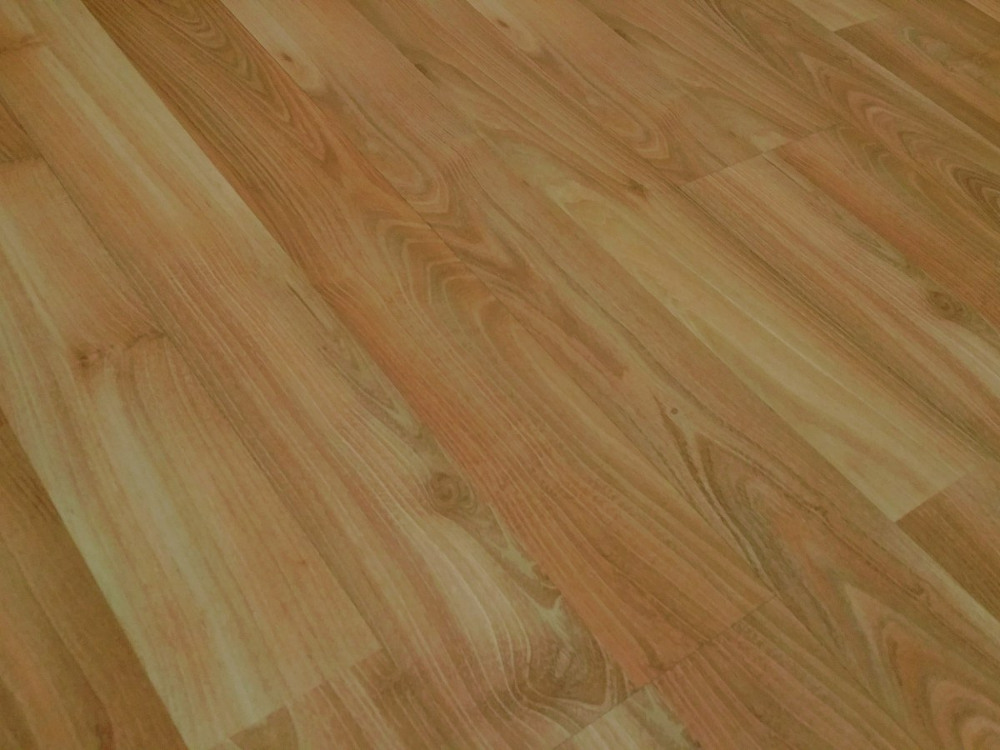
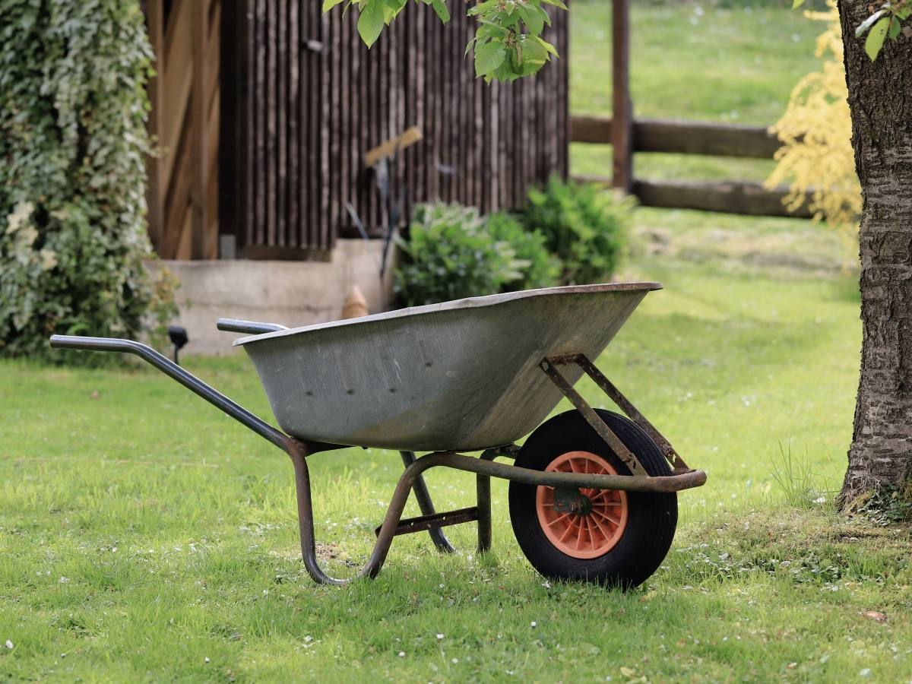
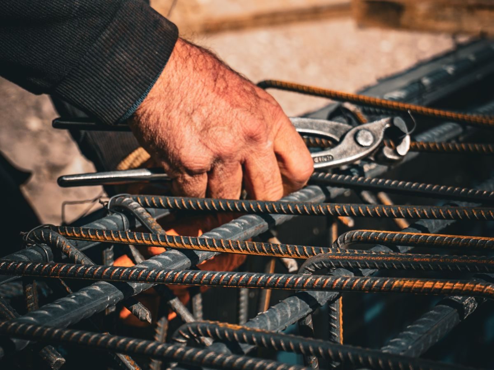
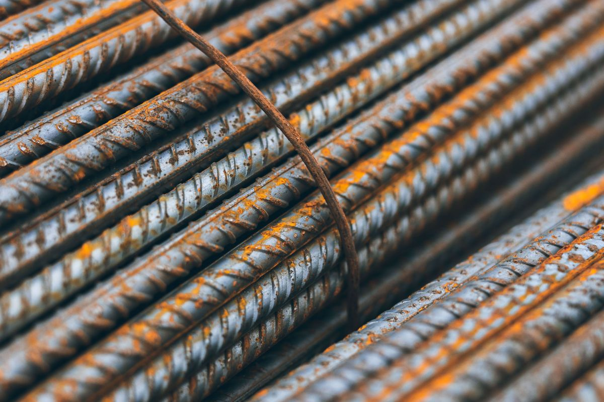
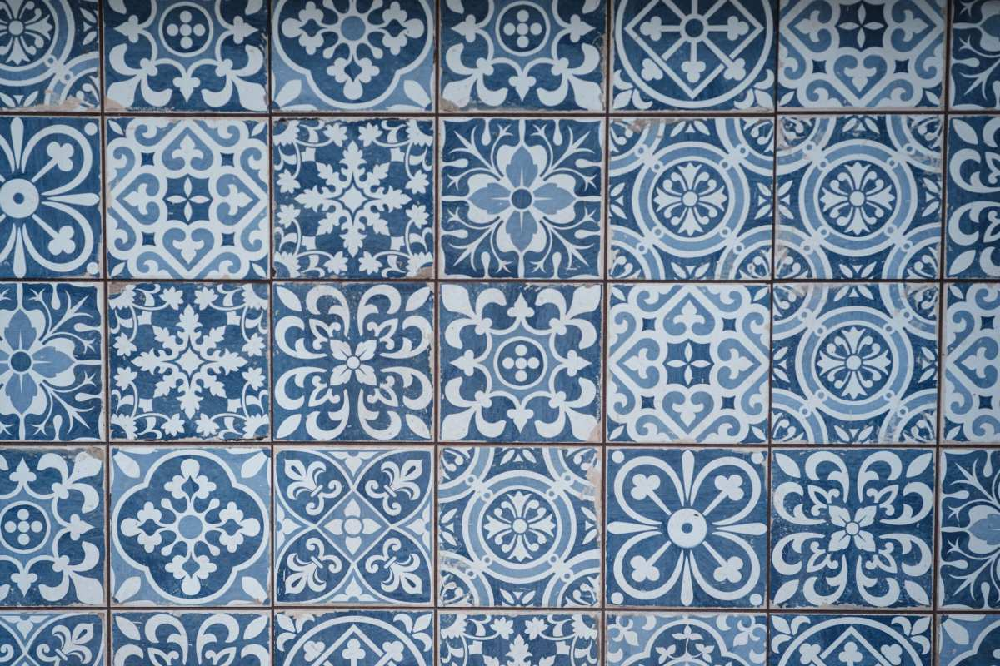
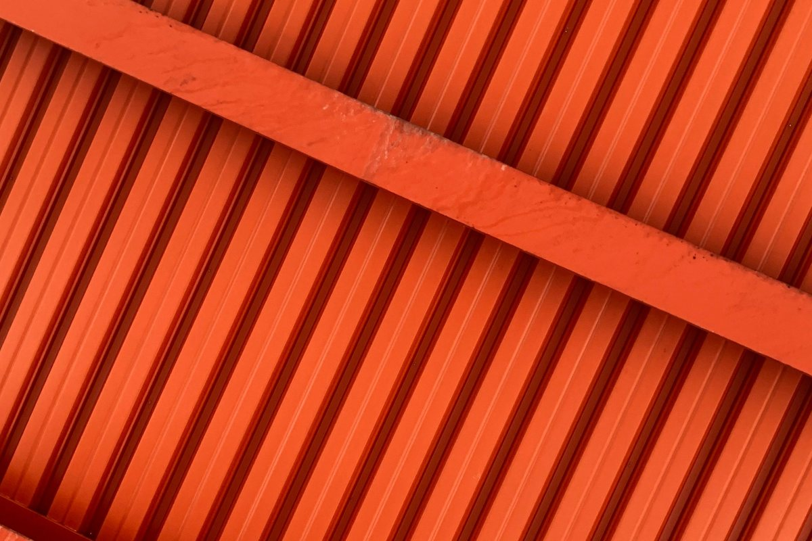
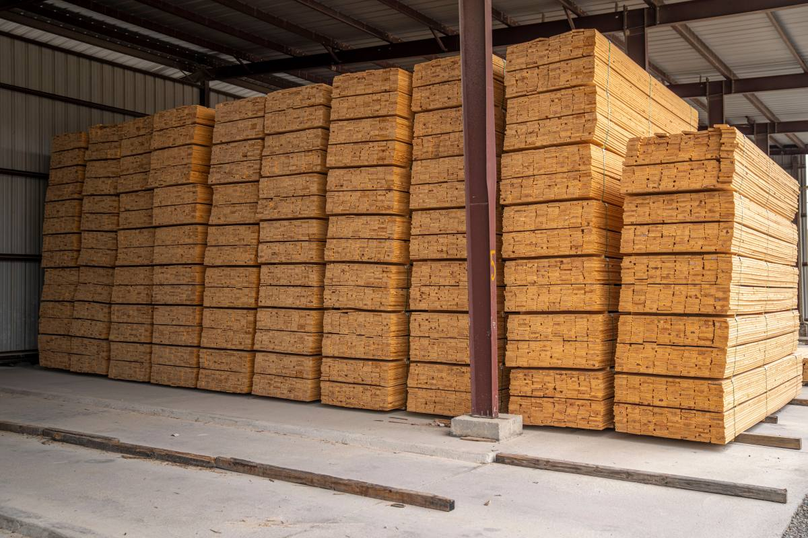
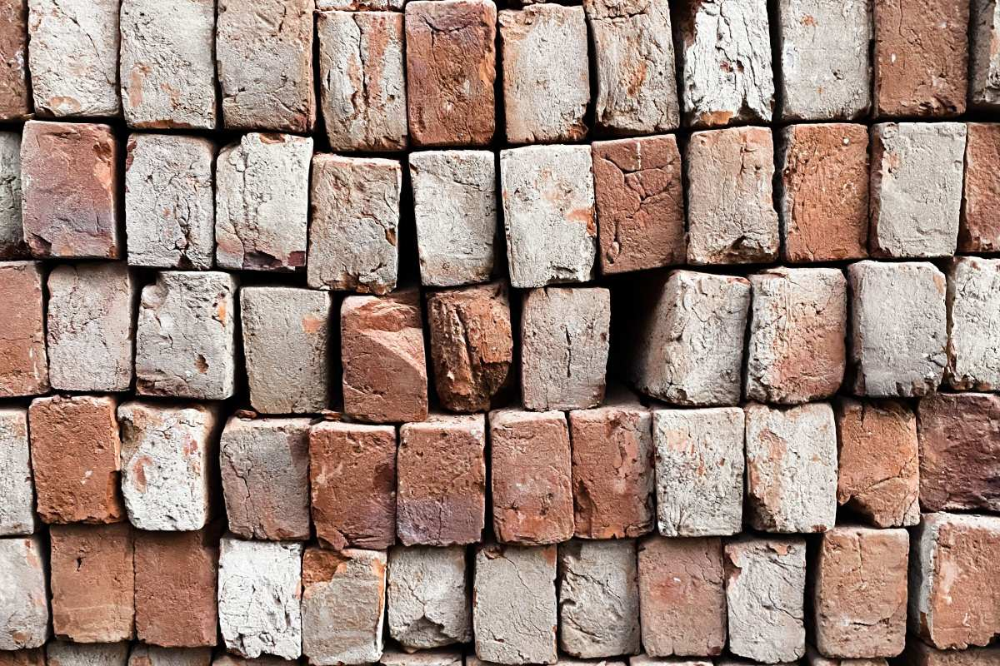

Ferretería y materiales · Freire y Pitrufquén
De la obra gruesa al último tornillo.
Dos locales, uno en cada pueblo, con más de 30 años en el rubro.
- 30años en el rubro
- 2locales: Freire y Pitrufquén
- 129reseñas en Google, nota 4,1
- 0páginas vivas: su dominio no carga
Veinte kilómetros entre uno y otro
¿Freire o Pitrufquén?
Vaya al que le quede más cerca de la obra.
- Freire
Humberto Primero 555
WhatsApp +56 9 5326 3258.
- Freire · horario
Lunes a viernes 9 a 19
Sábado de 9 a 15, horario continuado.
- Pitrufquén
Blanco Encalada 481
Teléfono +56 9 4898 0555.
- Pitrufquén · horario
Lunes a sábado 9 a 19:30
Domingo cerrado.
Direcciones, teléfonos y horarios de sus fichas públicas; conviene confirmarlos antes de ir.
El material pesa: por eso se cotiza antes.
Para construir y para terminar
Qué hay en JCP
-
Obra gruesa
Materiales de construcción
Cemento, fierro y ladrillo.
-

Cortada a medida
Madera dimensionada
Para la estructura y el tabique.
-

Para terminar
Cerámicas y pisos flotantes
Baño, cocina y living.
-
Muros y rejas
Pinturas
Interior y exterior.
-

Para el campo
Insumos agrícolas
Lo que se necesita en el predio.
-

De mano y eléctricas
Herramientas
Y también iluminación y muebles.
Los rubros salen de sus fichas públicas; el surtido de cada local lo confirma la ferretería.
Más de 30 años vendiendo materiales.
Y todavía no tiene una página donde verlos
Del patio a la obra
Lo que sale por el portón





Fotos de referencia: los locales de verdad los muestra JCP.
Mapa
Humberto Primero 555, Freire
- Freire
- Humberto Primero 555
- Pitrufquén
- Blanco Encalada 481
- WhatsApp Freire
- +56 9 5326 3258
- Pitrufquén
- +56 9 4898 0555
Para una obra grande, mande la lista por WhatsApp y se la cotizan.
Humberto Primero 555, Freire Ver el local de Pitrufquén
Para el dueño
Qué es real y qué falta
Lo verificado
Los dos locales, sus teléfonos y horarios, los rubros y las 129 reseñas con 4,1.
Lo que conviene revisar
Que el horario de cada local siga igual.
Lo que falta
Si hay despacho, los valores y fotos del patio y de los dos locales.